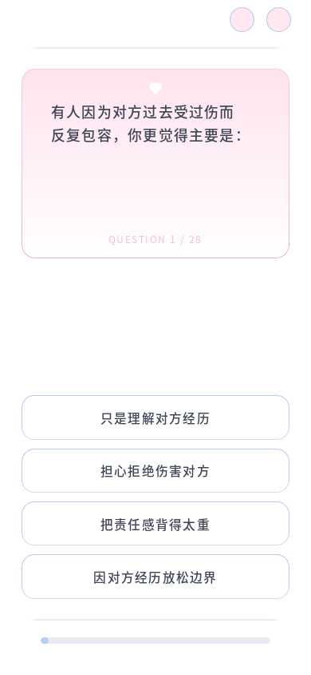
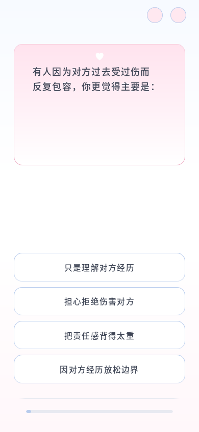
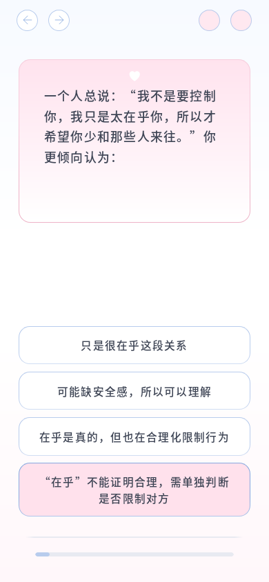

2026-10-13 · 本地 Firefox · 所有尺寸为 CSS 像素，前后截图固定 C10。


真实选答两题后返回已答题，上一题与返回未答题按钮同时显示。四个圆圈宽高均约 31.10px、同高，答题和导航状态正常。

960 组检查通过：题号与上方灰线隐藏、极淡背景、6.4px 进度条、圆圈大小与对齐、完整文本、无重叠、整页滚动及重复 resize。移动比较固定 C10、C24；为了单独核验位移，旧页面先隐藏题号，避免将删除题号导致的自然内容高度变化计作位移误差。截图使用真实修改前后的界面。最大位移误差低于 0.02px。
| 视口 | 圆圈下移 | 底部灰线下移 | 进度条下移 | 进度条高度 | 逐题检查 |
|---|---|---|---|---|---|
| 320 × 572 | 2.850px | 2.867px | 2.867px | 6.400px | 96/96 |
| 360 × 640 | 3.200px | 3.200px | 3.200px | 6.400px | 96/96 |
| 375 × 667 | 3.333px | 3.333px | 3.333px | 6.400px | 96/96 |
| 390 × 844 | 4.217px | 4.217px | 4.217px | 6.400px | 96/96 |
| 430 × 932 | 4.650px | 4.667px | 4.650px | 6.400px | 96/96 |
| 768 × 1024 | 5.117px | 5.117px | 5.117px | 6.400px | 96/96 |
| 1440 × 900 | 4.500px | 4.500px | 4.500px | 6.400px | 96/96 |
| 844 × 390 | 1.950px | 1.950px | 1.950px | 6.400px | 96/96 |
| 899 × 900 | 4.500px | 4.500px | 4.500px | 6.400px | 96/96 |
| 900 × 899 | 4.483px | 4.500px | 4.500px | 6.400px | 96/96 |
完整 28 题、上一题、返回未答题、刷新恢复、关于页往返与结果跳转通过；100%/200% 浏览器缩放在同一 CSS 视口下的位置与换行一致。长内容继续自然增高并允许整页滚动；页面末端留白为 17px。本轮未实测其他浏览器或实体手机。
Node 测试 13/14，唯一失败仍为既有的题库维护源与运行 JSON 不一致；本轮未改题库或评分。修改范围为答题页布局 CSS、题号的 hidden 属性、布局脚本的旧进度条高度基准及项目说明。